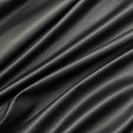
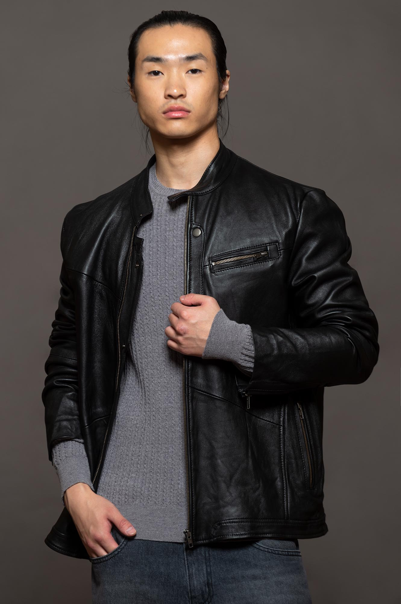
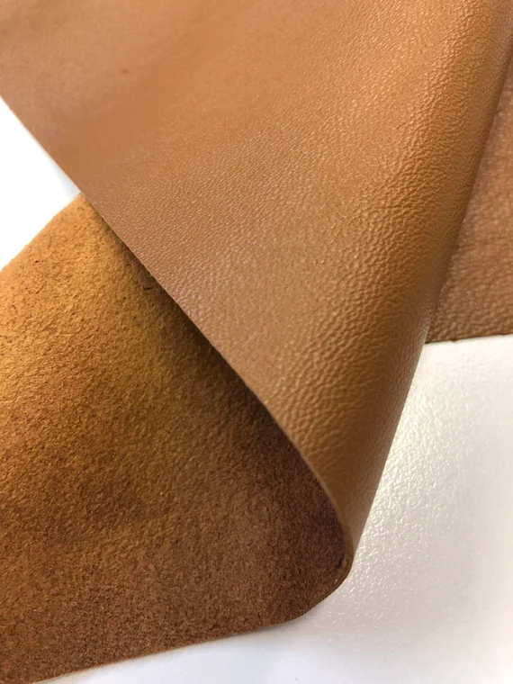
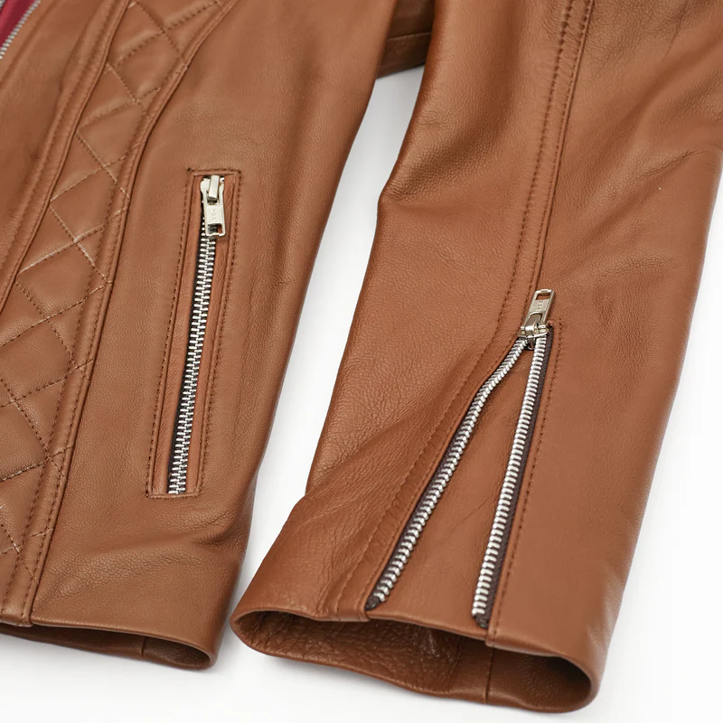
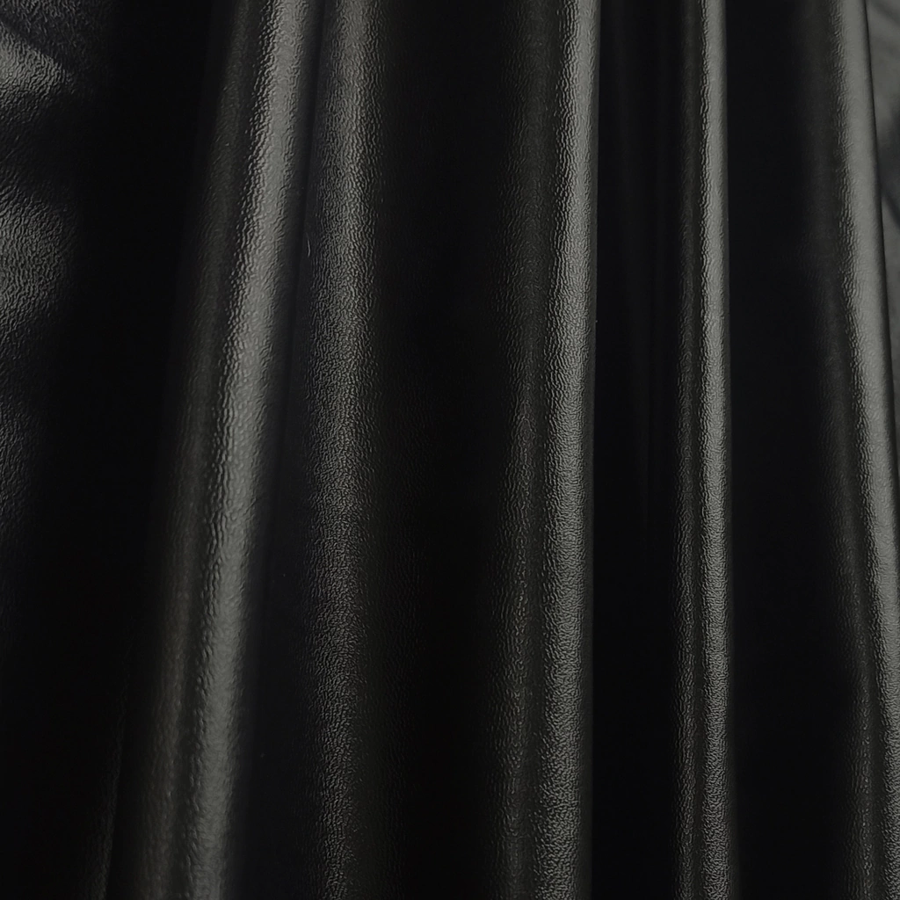
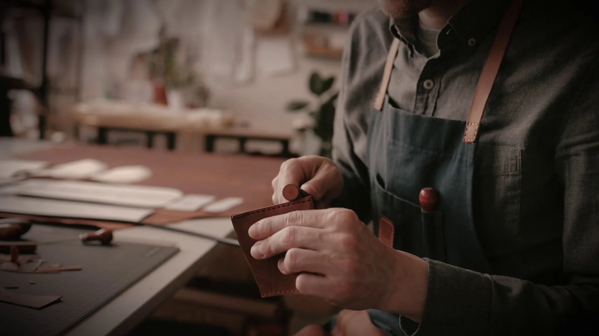
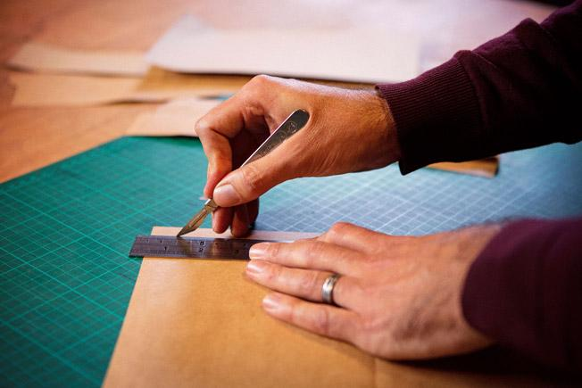
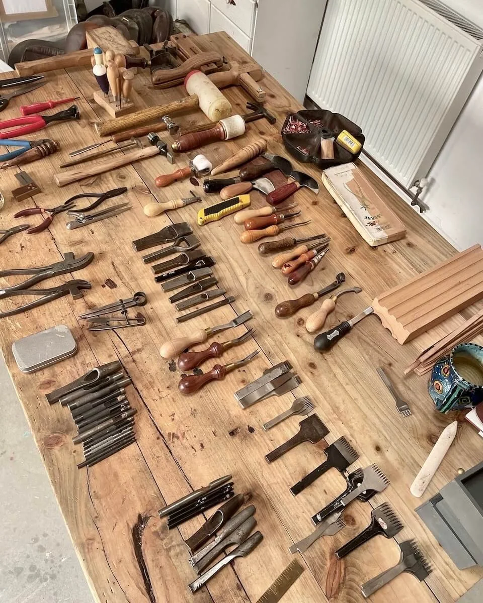

Orion
Campera de cuero genuino modelo masculino de diseño atemporal, con cierre centrado y dos bolsillos.
Talles: S - M - L - XL
Ver ProductoCamperas de cuero hechas en Buenos Aires, con materiales auténticos y diseño atemporal.
Ver colecciónANNA es una marca nacida del trabajo y la memoria.
Desde un taller familiar en el centro de Buenos Aires, hacemos camperas de cuero con una idea simple: que perduren en el tiempo.
Creemos en el oficio, en los procesos reales y en el respeto por los materiales auténticos.
Cada prenda lleva horas de trabajo, decisiones cuidadas y una forma de hacer que se transmite de generación en generación.


Campera de cuero genuino modelo masculino de diseño atemporal, con cierre centrado y dos bolsillos.
Talles: S - M - L - XL
Ver Producto


Campera de cuero genuino modelo femenino de diseño atemporal, con cuello en v, cierre centrado y dos bolsillos.
Talles: S - M - L - XL
Ver Producto


Campera de cuero genuino modelo femenino de diseño atemporal, con cierre cruzado y tres bolsillos.
Talles: S - M - L - XL
Ver ProductoCada campera ANNA comienza en el taller. El cuero se selecciona, se corta y se trabaja respetando el carácter de cada material.


Elegimos cueros auténticos por su durabilidad y carácter. Cada pieza tiene una textura única que forma parte de la identidad de la prenda.
Corte, armado, costura y terminación. Cada campera pasa por varias manos antes de terminarse. Es un proceso donde la experiencia importa tanto como la precisión.

Para consultas o compras: